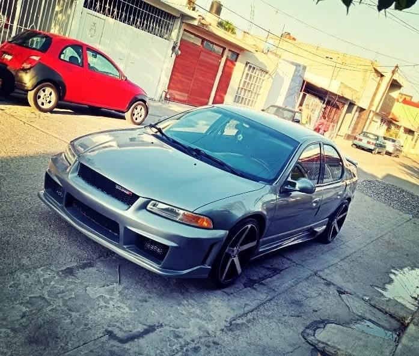
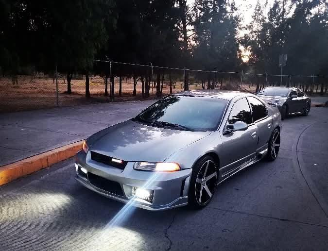
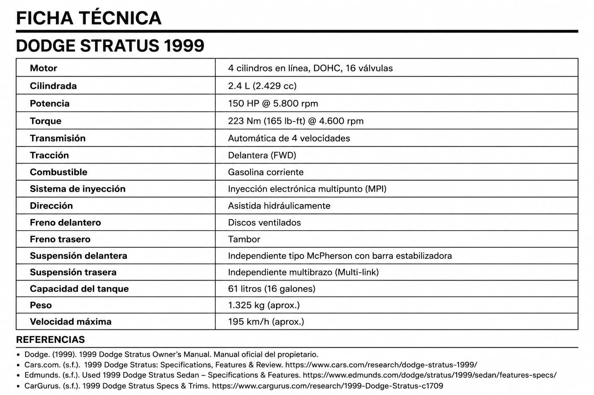

La historia del señor Carlos y su Dodge Stratus
ML- Una historia que sigue recorriendo kilómetros30 Julio 2026 | 19:00 pm
Dodge Stratus propiedad Carlos . Fotografía tomada por el propietario y cedida para este artículo.
Desde (México), el señor Carlos conserva un compañero que ha marcado gran parte de su vida: un Dodge Stratus modelo 1999. Su padre lo adquirió en 2001, convirtiéndose en el segundo propietario del vehículo, que en aquel entonces se encontraba completamente original.
La llegada de la cultura tuning, impulsada por el éxito de la saga Rápido y Furioso, despertó en el señor Carlos el deseo de transformar su automóvil. Su objetivo era claro: convertirlo en un Stratus único. Para lograrlo, instaló una nueva defensa delantera y trasera, añadió estribos laterales y un alerón en la cajuela. También pintó los cálipers en color morado, montó rines de 20 pulgadas con neumáticos 225/35 R20, instaló polarizado en los cristales y mejoró el sistema de audio.

Más allá de las modificaciones, el verdadero valor del Stratus está en la historia que representa. Durante casi veinticinco años, el señor Carlos ha compartido innumerables momentos con este automóvil. Aunque continúa siendo su vehículo de uso diario, procura conservarlo con el mismo cuidado y dedicación que el primer día, demostrando que un auto puede convertirse en parte de la historia de quien lo conduce.
El auge de la cultura tuning
La cultura tuning nació del deseo de romper con lo convencional. Para miles de apasionados por el automovilismo, un vehículo dejó de ser simplemente un medio de transporte para convertirse en una forma de expresión personal. Cada modificación representaba una idea, un gusto o una parte de la identidad de su propietario, haciendo que ningún automóvil fuera igual a otro.
Durante finales de los años noventa y principios de los 2000, este movimiento alcanzó una enorme popularidad gracias a la influencia de los encuentros automovilísticos, las revistas especializadas y, posteriormente, el impacto de la saga Rápido y Furioso. Las calles comenzaron a llenarse de vehículos personalizados con nuevos kits de carrocería, rines de gran tamaño, alerones, sistemas de sonido de alta potencia y colores llamativos que reflejaban el estilo de cada conductor.
Más allá de las modificaciones estéticas, el tuning representó una filosofía basada en la creatividad y la individualidad. Cada proyecto era el resultado de horas de trabajo, dedicación y pasión, con un objetivo común: construir un automóvil único, capaz de transmitir la personalidad, los sueños y la visión de quien lo conducía.Turner, J. (2004).

Dodge Stratus 1999
Presentado como parte de la primera generación del Stratus, el Dodge Stratus 1999 representó la apuesta de la marca estadounidense por ofrecer un sedán de tamaño mediano con una imagen más deportiva que la de muchos de sus competidores. Su diseño de líneas redondeadas, característico de Chrysler durante los años noventa, le otorgó una identidad propia y lo convirtió en un vehículo fácilmente reconocible en las carreteras.Flammang, J. (1999). Standard Catalog of American Cars 1976–1999. Krause Publications.
